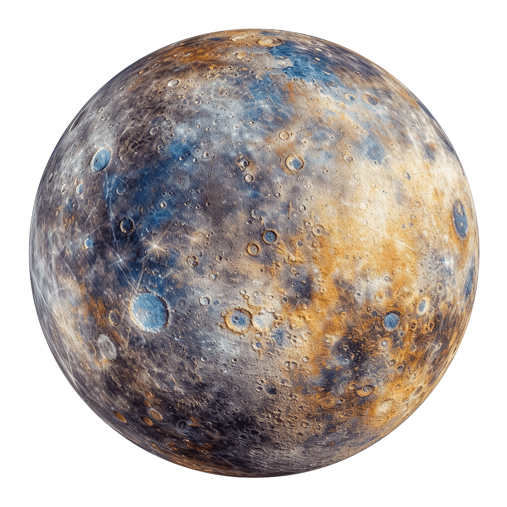

Closest to the Sun

Your Mercury PNG image rotates continuously. Use the controls below to adjust rotation speed and animation.
Mercury has a surprisingly large iron core that makes up about 75% of the planet's diameter (approximately 3,600 km wide). Scientists believe this massive core is partially liquid, generating a weak magnetic field. The core is surrounded by a silicate mantle (about 500 km thick) and a thin crust. Mercury's high density (5.427 g/cm³) is second only to Earth in our solar system.
Mercury experiences the most extreme temperature variations of any planet in our solar system. During the day, temperatures soar to 427°C (800°F) - hot enough to melt lead! At night, temperatures plummet to -173°C (-280°F). This 600°C temperature swing is due to the lack of atmosphere to retain heat. The surface is heavily cratered, resembling Earth's Moon, with smooth plains and massive cliffs called "scarps" formed as the planet's core cooled and contracted.
Mercury's surface is marked by:
Mercury is the fastest planet in our solar system, orbiting the Sun at 47.87 km/s (107,000 mph). It completes its orbit in just 88 Earth days! A unique 3:2 orbital resonance means Mercury rotates three times on its axis for every two orbits around the Sun. Despite being the closest planet to the Sun, it's not the hottest (Venus holds that title) due to its lack of atmosphere. The Mariner 10 and MESSENGER missions have revealed fascinating details about this mysterious world.
Source: NASA's MESSENGER Mission